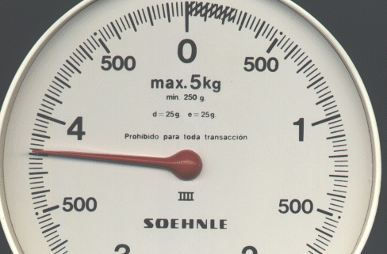
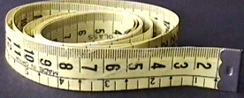

Balanza de cocina y cinta métrica de modista.
Esta balanza de cocina indica un error de 25 gramos (menor división de la escala) y en el fondo de escala por debajo de valores de 250 gramos no se puede leer
.

Fíjate en las indicaciones grabadas en el interior de la escala..
Es muy importante que antes de medir con cualquier aparato observes sus limitaciones y compruebes si está calibrado recientemente.

Con el uso la cinta se deforma y sus lecturas son imprecisas